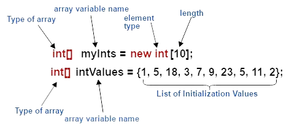
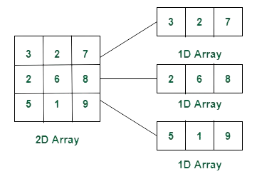
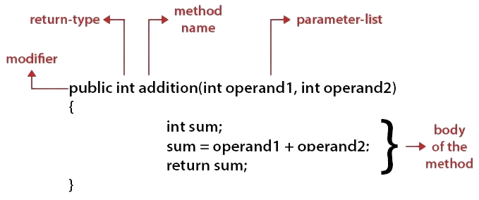
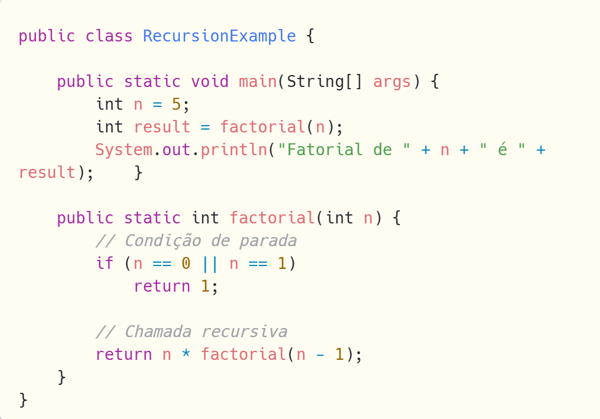
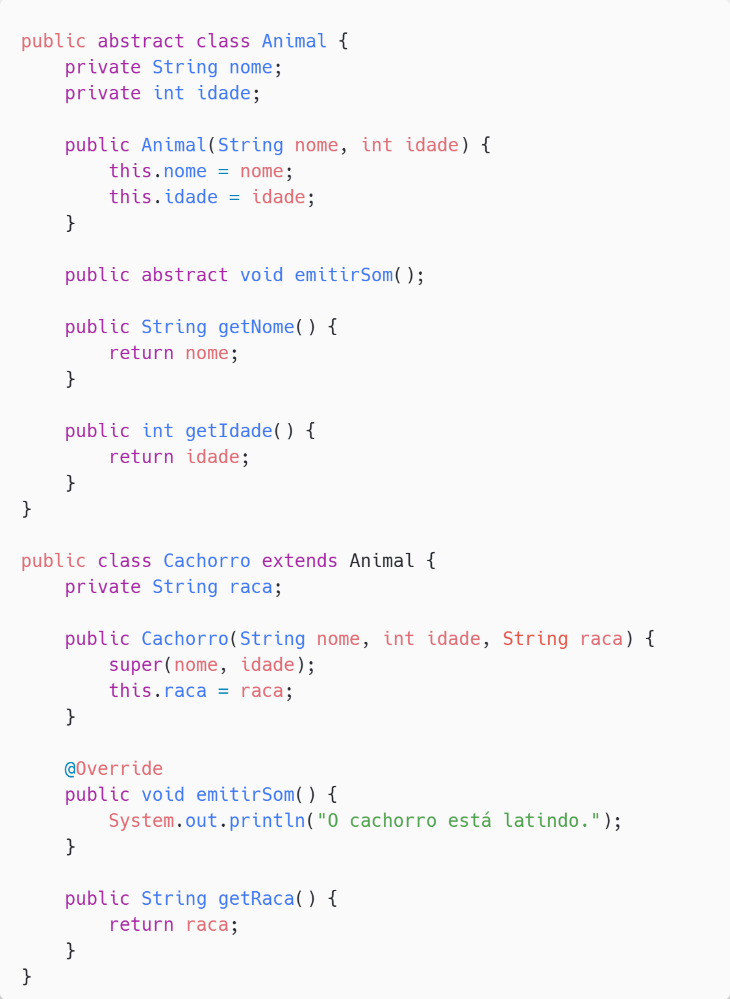
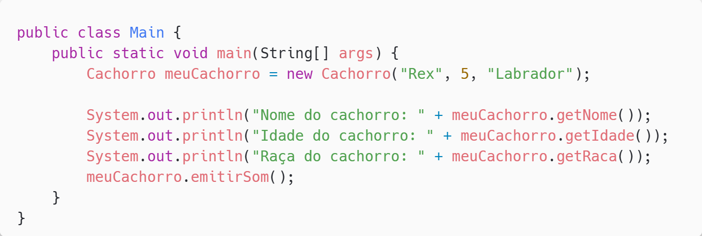

Java
As linguagens de programação são um conjunto de métodos padronizados, formado por regras e estruturas sintáticas e semânticas que, com a implementação de um código fonte, informará instruções de processamento ao computador.
A linguagem utilizada em aula foi Java, orientada a objetos e de propósito geral, além de possuir um gerenciamento de memória automático e uma vasta coleção de bibliotecas.

Dentre as Integrated Development Environments (IDEs) de Java, a operada em aula foi IntelliJ, por meio de sua versão gratuita, Community Edition.
Tipos de Dados
Java, como qualquer outra linguagem, possui tipos de dados primitivos, para determinar quais valores uma variável pode assumir e quais operações podem ser realizadas sobre esses valores. Eles são predefinidos e ocupam um espaço na memória padrozinado, ou seja, há um limite para seu valor.
Os principais tipos de dados primitivos são:
| Tipo de Dado |
Tamanho |
Intervalo |
Uso |
| byte |
8 bits |
-128 a 127 |
Armazena números inteiros pequenos. |
| short |
16 bits |
-32.768 a 32.767 |
Armazena números inteiros médios. |
| int |
32 bits |
-2.147.483.648 a 2.147.483.647 |
Tipo de dado padrão para números inteiros. |
| long |
64 bits |
-9.223.372.036.854.775.808 a 9.223.372.036.854.775.807 |
Usado quando um intervalo maior que o int é necessário. |
| float |
32 bits |
±3.40282347E+38F (6-7 dígitos decimais) |
Usado para números de ponto flutuante de precisão simples. |
| double |
64 bits |
±1.79769313486231570E+308 (15 dígitos decimais) |
Usado para números de ponto flutuante de precisão maior. |
| char |
16 bits |
0 a 65.535 (valores Unicode) |
Armazena um único caractere Unicode. |
| boolean |
1 bit (teoricamente) |
true ou false |
Armazena valores booleanos. Usado para condições binárias. |

Operadores Aritméticos
Os operadores matemáticos realizam operações aritméticas básicas, como adição, subtração, multiplicação, divisão e módulo com os tipos dados númericos.
| Operador |
Descrição |
Exemplo |
Resultado |
| + |
Adição |
int sum = 5 + 3; |
sum = 8 |
| - |
Subtração |
int difference = 5 - 3; |
difference = 2 |
| * |
Multiplicação |
int product = 5 * 3; |
product = 15 |
| / |
Divisão |
int quotient = 5 / 2; |
quotient = 2 |
| % |
Módulo (Resto da Divisão) |
int remainder = 5 % 2; |
remainder = 1 |
| ++ |
Incremento |
int a = 5; a++; |
a = 6 |
| -- |
Decremento |
int a = 5; a--; |
a = 4 |
Operadores Lógicos
Os operadores lógicos combinam expressões booleanas e realizam operações lógicas como AND, OR, NOT e comparações.
| Operador |
Descrição |
Exemplo |
Resultado |
| == |
Igualdade |
boolean result = (5 == 3); |
result = false |
| != |
Desigualdade |
boolean result = (5 != 3); |
result = true |
| > |
Maior que |
boolean result = (5 > 3); |
result = true |
| < |
Menor que |
boolean result = (5 < 3); |
result = false |
| >= |
Maior ou igual a |
boolean result = (5 >= 5); |
result = true |
| <= |
Menor ou igual a |
boolean result = (5 <= 3); |
result = false |
| && |
E lógico |
boolean result = (true && false); |
result = false |
| || |
OU lógico |
boolean result = (true || false); |
result = true |
| ! |
NÃO lógico |
boolean result = !true; |
result = false |
LISTA 1

Estruturas de Decisão
Em Java, as estruturas de decisão permitem que você controle o fluxo do programa com base em condições específicas.
| Estrutura |
Descrição |
Sintaxe |
Exemplo |
| if-else |
Executa um bloco de código se a condição `if` for verdadeira e outro bloco se for falsa. |
if (condição) { } else { } |
if (number > 0)
System.out.println("O número é positivo.");
else
System.out.println("O número é negativo.");
|
| else if |
Executa um bloco de código se a condição `if` for falsa e a condição `else if` for verdadeira. |
if (condição) { } else if (condição) { } |
if (number > 0)
System.out.println("O número é positivo.");
else if (number < 0)
System.out.println("O número é negativo."); |
| switch |
Executa um bloco de código de acordo com o valor de uma expressão específica. |
switch (expressão) { case valorN: // Código break; default: // Código } |
switch (day) {
case 1:
System.out.println("Domingo");
break;
case 2:
System.out.println("Segunda-feira");
break;
default:
System.out.println("Dia não reconhecido");
}
|

LISTA 2
Estruturas de Repetição
As estruturas de repetição permitem executar um bloco de código repetidamente com base em uma condição específica. Cada uma dessas estruturas tem suas características e é adequada para diferentes cenários de programação.
| Estrutura |
Descrição |
Sintaxe |
Exemplo |
| for |
Repete um bloco de código um número específico de vezes. |
for (inicialização; condição; iteração) { } |
for (int i = 0; i < 5; i++)
System.out.println("Número: " + i); |
| while |
Repete um bloco de código enquanto a condição for verdadeira. |
while (condição) { } |
while (i < 5)
System.out.println("Número: " + i);
i++; |
| do-while |
Repete um bloco de código uma vez e depois continua a repetir enquanto a condição for verdadeira. |
do { } while (condição); |
do {
System.out.println("Número: " + i);
i++;
} while (i < 5); |
LISTA 3
Vetores
Vetores são estruturas de dados que armazenam múltiplos valores do mesmo tipo em uma única variável. Eles têm tamanho fixo, definido no momento da criação, e os elementos são acessados por índices.

Matrizes
Matrizes são vetores de vetores. O tipo mais comum é a matriz bidimensional (vetor 2D), permitem armazenar dados em uma grade.

LISTA 4
Funções
As funções, em Java, são chamadas de métodos. Um método é um bloco de código que executa uma tarefa específica e retorna um valor (ou não), podendo ser invocado e reutilizado em diferentes partes de um programa, além de possuir parâmetros, variáveis com valores recebidos quando a função é executada.

Um exemplo de função é 'main', na qual todo programa Java começa a executando e pode ser usada para chamar outras funções.
Funções recursivas
Já as funções recursivas são aquelas que chamam a si mesmas diretamente ou indiretamente, dividindo, assim, o problema original em subproblemas menores. Mas sempre deve haver uma condição de parada explícita para evitar chamadas recursivas infinitas.
Exemplo Fatorial
Nesse exemplo, dividimos n! em várias recursões para calcular o produto de n com seus inteiros positivos menores até 1.

LISTA 5
Programação Orientada a Objeto (POO)
Por fim, estudamos a programação orientada a objetos em Java, que permite a organização de código de forma modular e reutilizável através de objetos que interagem e conectam entre si por meio das classes.
É um paradigma de programação baseado no conceito de "objetos", que são unidades independentes que contêm dados (atributos) e funcionalidades (métodos) pertencentes a um modelo (classe), para operar nesses dados.
Os principais conceitos da POO são:
| Elemento |
Descrição |
Exemplo em Java |
| Classe |
Modelo que descreve os atributos e métodos dos objetos. |
public class Carro { } |
| Objeto |
Instância de uma classe que possui seus próprios atributos e métodos. |
Carro meuCarro = new Carro(); |
| Encapsulamento |
Princípio de proteger dados de um objeto. |
private String marca;
public String getMarca() { } |
| Sobrecarga |
Métodos com o mesmo nome e assinaturas diferentes. |
pubic int somar(int a) { } pubic int somar(int a, int b) { } |
| Herança |
Mecanismo que permite uma classe herdar atributos e métodos de outra. |
public class CarroEsportivo extends Carro { } |
| Override |
Sobrescrita de métodos herdados. |
@Override public void buzina() { } |
| Abstração |
Aspectos essenciais de um objeto mas não instanciáveis. |
public abstract class Animal { } |
Exemplo POO
Nesse exemplo, há uma classe pai abstrata chamada 'Animal' e uma classe filho chamada 'Cachorro'. A classe 'Animal' é abstrata e representa atributos e métodos genérico, enquanto 'Cachorro' representa um cachorro, algo instanciável.
Perceba a prática dos conceitos da POO, como a herença (extends) e encapsulamento (private) de atributos, sobrescrita (@Override) de métodos e classes abstratas (abstract).

Uma vez criada uma classe, podemos instanciar seus objetos na 'main', onde inicia-se o programa.
Nesse caso, criamos um objeto de 'Cachorro' e o instanciamos com um nome, idade e raça através do método construtor. Em seguida, imprimimos seus atributos com os métodos getter.

LISTA 6